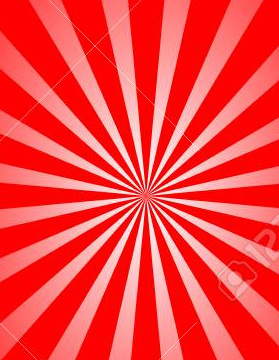

let puntuacionJuego;
let card;
let array= [];
let marcado;
function getrandomItgem(max){ //nuemero RANDOME
    return Math.floor(Math.random() * max)
}
function rellenarForm(){
    document.getElementById('nickJuego').value=nick
    document.getElementById('avatarJuego').src=avatar
    document.getElementById('dificultadJuego').value=dificultad
    tamanoPanel = parseInt(tamano)

    //igualamos la dificultad a un valor antes de empezar, esto hara que tendran un tiempo las cartas visibles al principio
    if(dificultad == "Baja"){
        document.getElementById('tiempo').value= "10"
    }else if(dificultad =="Media"){
        document.getElementById('tiempo').value="6"
    }else{
        document.getElementById('tiempo').value="3"
    }
}
//Pintar panel Automaticamente dependiendo del tamano que elija
function pintarPanel(){
    document.getElementById('juego').style.gridTemplateColumns = "repeat("+tamano+",1fr)" 
    document.getElementById('juego').style.gridTemplateRows = "repeat("+tamano+",1fr)" 
    document.getElementById('cartasbocabajo').style.gridTemplateColumns = "repeat("+tamano+",1fr)" 
    document.getElementById('cartasbocabajo').style.gridTemplateRows = "repeat("+tamano+",1fr)" 
    //Elementos de forma automatica
    let items="";
    let itembocabajo = "";
    //lista de src para ir cambiando cada vez que se recargue la pagina
    let imgsrc = ["./imagenes/spidermancard.jpg","./imagenes/supermanCard.jpg","./imagenes/ironmanCard.jpg","./imagenes/DeadPoolCard.jpg"];
    let randomNumber = 0;
    for (let index = 0; index<parseInt(tamano)* parseInt(tamano); index++){
        randomNumber = getrandomItgem(4);
        itembocabajo += `<div id="${imgsrc[randomNumber]}" class="itembocabajo"></div>`
        items +=`<div id="${imgsrc[randomNumber]}" class="item"></div>`
    }
    document.getElementById('cartasbocabajo').innerHTML=`${itembocabajo}`
    document.getElementById('juego').innerHTML=`${items}`    
    IDinterval= setInterval(cuentaAtras, 1000)
}
//Esta funcion esta principalmente para: Dependiendo la dificultad se visualizaran las cartas x segundos 
function cuentaAtras(){
    if (dificultad == "Baja"){
        let tiempo = parseInt(document.getElementById('tiempo').value)-1
        document.getElementById('tiempo').value =tiempo
        document.getElementById('cartasbocabajo').style.zIndex ="1"
        document.getElementById('juego').style.zIndex= "2"
        if (tiempo == 0){
                clearInterval(IDinterval)
                document.getElementById('cartasbocabajo').style.zIndex ="2"
                document.getElementById('juego').style.zIndex= "1"
                document.getElementById('tiempo').value= "0"
        }

    }else if (dificultad == "Media"){
        let tiempo = parseInt(document.getElementById('tiempo').value)-1
        document.getElementById('tiempo').value =tiempo
        document.getElementById('cartasbocabajo').style.zIndex ="1"
        document.getElementById('juego').style.zIndex= "2"
        if (tiempo == 0){
                clearInterval(IDinterval)
                document.getElementById('cartasbocabajo').style.zIndex ="2"
                document.getElementById('juego').style.zIndex= "1"
                document.getElementById('tiempo').value= "0"
        }
    }else{
        let tiempo = parseInt(document.getElementById('tiempo').value)-1
        document.getElementById('tiempo').value =tiempo
        document.getElementById('cartasbocabajo').style.zIndex ="1"
        document.getElementById('juego').style.zIndex= "2"
        if (tiempo == 0){
                clearInterval(IDinterval)
                document.getElementById('cartasbocabajo').style.zIndex ="2"
                document.getElementById('juego').style.zIndex= "1"
                document.getElementById('tiempo').value= "0"
        }
    }
    //Despues de que se haya hecho la cuenta atras dependiendo de la dificultad se programan los eventos 
    programarEventos()
}
//Aqui deberiamos pinchar la carta boca abajo
function programarEventos(){
    let itembocabajo = document.getElementsByClassName('itembocabajo')
    for (let item of itembocabajo){
        item.addEventListener('click',clickImagenes)   
    } 
}
//Eventos del juego 
function clickImagenes(event){
    let item = event.target;
    card = event.target.parentElement
    marcado= []
    //cada vez que se hace click se cambia
    item.src = ""
    ComprobacionArray(card,marcado,item)
}
function ComprobacionArray(card,marcado,item){
   //ponemos los src en distintos arrays para luego comparar
    if (marcado.length === 0) {
        marcado.push(card.id)
        array.push(marcado)
    }else {
        marcado.push(card.id)
        
    }
    //Si el array es mayor de 1 vuelve a estar vacia 
    if (array.length >1) {
            array=[];       
    }
    //Si la posicion 0 y 1 son iguales se suman puntos
    if (array[0] === array[1]) {
        puntuacionJuego =parseInt(document.getElementById('puntuacion').value)+1
        document.getElementById('puntuacion').value= puntuacionJuego
    }else if(array[0] !== array[1]){
        

    }

    console.log(array);
}
//capturamos Datos
recogerDatos()
//Comprobar Datos
if(!comprobarDatos()) location= "index.html"
//rellenar Formulario
rellenarForm()
//Pintar Panel
pintarPanel()
//Comenzar Juego

//Crear eventos del juego 

